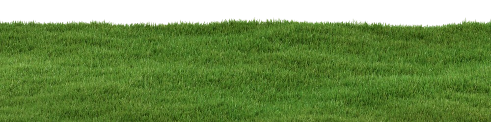

<body>
  <!-- reference -- https://www.smashingmagazine.com/2023/09/revealing-images-css-mask-animations/ -->

  <!-- use this for screenshots -- https://html2canvas.hertzen.com/ -->
  <style>
    #my-lamp {
      /* width & other styles */
      filter: brightness(0.55);
      transition: filter 0.3s ease;
    }

    #my-lamp.clicked {
      filter: brightness(1.2) saturate(1.6) drop-shadow(0px 0px 50px rgba(247, 220, 156, 0.85));
    }

    #section-1 {
      background: url(https://www.easytogrowbulbs.com/cdn/shop/files/ClimbingFrenchBeanPlant_Gemini-sqWeb.jpg?v=1774907279)
    }

    .image-1 {
      position: fixed;
      bottom: 0;
      width: 100%;
      transform: scale(1.1);
    }

    /* #floor {
      position: fixed;
      bottom: 0;
      width: 100%;
      transform: scale(1.1);
    } */

    /* #main-section.clicked {
      filter: brightness(1.2) saturate(1.6) drop-shadow(0px 0px 50px rgba(247, 220, 156, 0.85));
    } */

    .main-section-clicked {
      background-color: black;
    }

    body {
      transition: ease-in-out all 2s;
    }

    body * {
      position: absolute;
    }

    .d-none {
      display: none;
      transition: ease-in-out all 2s;
    }

    .transition-1 {
      transition: ease-in-out all 2s;
    }

    #options {
      position: fixed;
      bottom: 15%;
      left: 50%;
      display: block;
    }

    .spacing-1 {
      margin-left: 40px;
    }
  </style>

  <section id="main-section" class="transition-1">
    <div id="day">
      
    </div>
    <div id="night">
      
    </div>
    
    <div id="options">
      <button id="button-1">Day</button>
      <button id="button-2" class="spacing-1">Night</button>
    </div>
  </section>
  <!-- <section id="section-1">
    <div id="floor">
    </div>
  </section> -->

  <script>
    const bodyElement = document.querySelector('body')
    const nightSkyBackground = document.querySelector('#day-sky-bg')
    const daySkyBackground = document.querySelector('#night-sky-bg')
    const option1 = document.querySelector('#option-1')
    const option2 = document.querySelector('#option-2')
    document.addEventListener('click', function (e) {
      target = e.target
      console.log('target ' + target.outerHTML)
      console.log(`target.getAttribute('id=button-1') ` + target.getAttribute('[id=button-1]'))
      // bodyElement.classList.toggle('main-section-clicked')
      if (target.getAttribute('id') === 'button-1') {
        if (!nightSkyBackground.classList.contains('d-none')) {
          nightSkyBackground.classList.toggle('d-none')
        }
        daySkyBackground.classList.toggle('d-none')
      }
      if (target.getAttribute('id') === 'button-2') {
        if (!daySkyBackground.classList.contains('d-none')) {
          daySkyBackground.classList.toggle('d-none')
        }
        nightSkyBackground.classList.toggle('d-none')
      }
    })
  </script>

  <!-- Option 1 (simplest, no customization) -->
  <script type="module">
    import { playhtml } from "https://unpkg.com/playhtml@2.9.0";

    // Initialize with cursor tracking
    playhtml.init({
      cursors: {
        enabled: true,
        room: "page",
        developmentMode: true,
        // Custom player identity
        playerIdentity: {
          publicKey: "alice",
          name: "Alice",
          playerStyle: {
            colorPalette: ["#3b82f6", "#8b5cf6", "#ec4899"]
          }
        },

        // Proximity detection
        proximityThreshold: 1200,  // pixels
        onProximityEntered: (playerIdentity, positions, angle) => {
          console.log("User nearby!", playerIdentity.name);
        },
        onProximityLeft: (connectionId) => {
          console.log("User left proximity");
        },

        // Visibility threshold (hide distant cursors)
        visibilityThreshold: 1000,  // pixels

        // Enable chat
        enableChat: true,

        // Coordinate space cursors are stored and broadcast in
        coordinateMode: "relative",  // "relative" (default) or "absolute"

        // CSS cursor applied to the page while cursors are active
        cursorStyle: "none",

        // Custom cursor rendering
        onCustomCursorRender: (connectionId, element) => {
          // Return custom element or null for default
          return null;
        }
      }
    });

    // Make playhtml available globally for script.js
    window.playhtml = playhtml;
  </script>
  <!-- The website JavaScript file -->
  <script src="/script.js" defer></script>
</body>